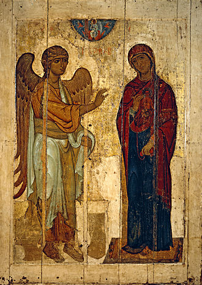
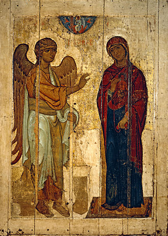
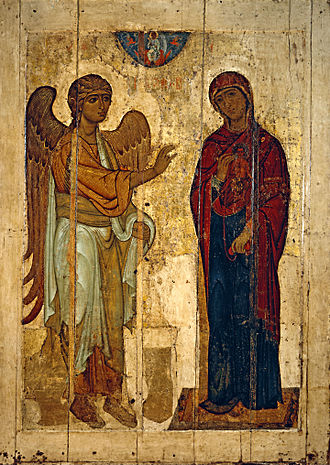

Всероссийское музейное объединение «Госуда́рственная Третьяко́вская галере́я» (сокр. Третьяковская галерея, ГТГ; разг. Третьяко́вка) — российский федеральный государственный художественный музей в Москве, созданный на основе исторических коллекций купцов братьевПавла и Сергея Михайловичей Третьяковых; одно из крупнейших в мире собраний русского изобразительного искусства.
История галереи традиционно отсчитывается с 1856 года — времени первых документированных приобретений П. М. Третьякова; в 1867 году галерея была открыта для посещения, а в 1892 году передана в собственность Москве. На момент передачи коллекция музея насчитывала 1276 картин, 471 рисунок, 10 скульптур русских художников, а также 84 картины иностранных мастеров[8]. После революции 1917 года галерея была национализирована коллекция стала пополнятьсяиз конфискованных частных собраний и музеев. В 1985 году Государственная картинная галерея на Крымском Валу была объединена с Третьяковской галереей и образовала единый музейный комплекс — Новая Третьяковка вместе с Центральным домом художника. В здании в Лаврушкинском переулке была размещенаколлекция живописи с древнейших времён до 1910-х годов, а в отделе наКрымском Валу — искусство XX века[8].
По состоянию на 2018 год экспозиция насчитывала более 180 000 предметов и включает в себя предметы живописи, скульптуры и изделия из драгоценных металлов, созданные с XI по XX век[8]. Музей расположен в здании, построенном в 1906 году, — объекте культурного наследия народов России федерального значения и охраняется государством[10]
Основателем галереи является промышленник и меценат Павел Михайлович Третьяков, происходивший из небогатого купеческого рода. Вместе со своим братом Сергеем они создали Костромскую мануфактуру льняных изделий, которая приносила стабильный доход. Впоследствии братья Третьяковы увлеклись благотворительностью и коллекционированием живописи: Павел — работами русских художников, а Сергей — полотнами западноевропейских мастеров.
Датой создания галереи считается 1856 год, когда Павел Третьяков приобрёл две работы современных русских художников: «Искушение» Николая Шильдера и «Стычка с финляндскими контрабандистами» Василия Худякова[14]. Это не первые купленные меценатом работы, однако достоверных данных о более ранних приобретениях не сохранилось. Коллекционер хотел создать национальный музей, в котором будут представлены работы русских художников.
"Для меня, истинно и пламенно любящего живопись, не может быть лучшего желания, как положить начало общественного, всем доступного хранилища изящных искусств, приносящего многим пользу, всем удовольствие. Я желал бы оставить национальную галерею, то есть состоящую из картин русских художников."
В 1862 году Третьяков приобрёл работу «Сельский крестный ход на пасхе», написанную Василием Перовым. На полотне изображалась антицерковная сатира — участники крёстного хода показаны выпившими, а их образы примитизированы, — что вызвало вопросы следователя Пречистенской и Хамовнической полицейских частей[18][нет в источнике]. В последующие годы в собрание галереи вошли работы художников-передвижников: «Пётр I допрашивает царевича Алексея Петровича в Петергофе» Николая Ге, картины Ивана Шишкина, Алексея Боголюбова, Михаила Клодта, Константина Савицкого, Архипа Куинджи и Карла Гуна. Большое влияние на формирование музея оказало общение Третьякова с художником Иваном Крамским, который помогал формировать экспозицию и отбирать полотна.
"Начнём с того, что Павел Михайлович Третьяков собирал исключительно современное искусство. <...> Третьяков покупал не просто произведения, созданные сегодня. Он опережал время – покупал идею." бывшая директор Третьяковской галереи Зельфира Трегулова
В 1867 году Третьяков открыл для общественности свою усадьбу — музей в Лаврушинском переулке носил название «Московская городская галерея Павла и Сергея Третьяковых» и включал в себя 1276 картин, 471 рисунок, 10 скульптур русских художников, а также 84 картины иностранных мастеров[20]. В 1868-м Третьяков был избран почётным вольным общником Академии художеств, что позволило меценату официально поддерживать малоизвестных мастеров: Василия Максимова, Иллариона Прянишникова, Виктора Васнецова и Владимира Маковского[8]. По совету Льва Толстого, Третьяков купил картины «Иван Грозный и сын его Иван 16 ноября 1581 года» Ильи Репина и «Милосердие» Николая Ге, не одобренные царскими властями. Это вдохновляло художников не бояться цензуры[21].
На рубеже 1890-х годов Третьяковская галерея приобрела статус национального музея, частного по принадлежности и общественного по характеру. Это означало, что галерея была открыта для бесплатного посещения для любого посетителя[11]. В это же время Павел Третьяков стал принимать участие в организации государственных мероприятий. Так, меценат решал вопрос о создании отдела русской живописи на международной выставке 1892 года в Париже
В 1892 году Павел Третьяков передал галерею в дар Москве. Поводом послужила смерть брата, завещавшего перед смертью Москве половину дома в Лаврушинском переулке, капитал размером 125 тысяч рублей и собранную художественную коллекцию. Чтобы ускорить передачу, Павел объединил коллекции и подарил их городу. На тот момент в собрании братьев Третьяковых находилось более двух тысяч произведений живописи, скульптуры и графики. По решению городской думы Павел Третьяков был назначен пожизненным хранителем галереи. В его обязанности входил отбор произведений для постоянной экспозиции, приобретение картин на государственные средства, а также решение вопросов о расширении помещений музея[11][20][22]. В честь передачи галереи городу в 1894 году Московское общество любителей художеств собрало Первый съезд русских художников, на котором с речью выступил художник Николай Ге
Основа музейной коллекции сформировалась в 1860—1880-е годы. В 1872—1873 годах Перов написал для Павла Третьякова портреты писателей Фёдора Достоевского и Ивана Тургенева, историка Михаила Погодина, учёного Владимира Даля, поэта Аполлона Майкова. Портрет Тургенева не понравился Третьякову, который лично знал писателя
"Вы говорите, что у вас впечатления чего-то львиного в фигуре Тургенева. В портрете Репина это есть: но нет того Тургенева, каким мы его знаем, нет того, что есть в портрете Гончарова, т. е. совершенного живого человека как он есть...""
Специально для коллекции Третьяковской галереи в 1873 году Иван Крамской нарисовал портрет Льва Толстого. Для этого художник приехал в Ясную Поляну, однако граф не был настроен на позирование и всячески мешал процессу. Сын писателя Сергей вспоминал, что Крамской смог написать только голову Льва Толстого, остальные части тела и одежду ему пришлось дописывать по памяти
В последующие годы Третьяков заказывал у Николая Ге портреты Александра Герцена, Михаила Салтыкова-Щедрина, Николая Некрасова, историка Николая Костомарова и писателя Алексея Потехина[
В 1884 году в галерею поступила работа Репина «Крестный ход в Курской губернии», которая, по мнению Третьякова, отражала «крестьянскую реальность» и должна была экспонироваться в отдельном зале. Через несколько лет полотно переместили в общий зал, а Третьяков купил у Репина другие его работы: «Перед исповедью» и «Арест пропагандиста», в которых художник воплотил образы революционных борцов и деятельность группировки «Народная воля». В это же время в коллекцию Третьяковской галереи вошли работы Василия Сурикова, первая из которых — «Утро стрелецкой казни» — была куплена в 1881 году на IX Передвижной выставке. Позднее Третьяков приобрёл «Боярыню Морозову» и другие полотна Сурикова, за созданием некоторых из них Третьяков следил прямо в мастерской
Многие работы для Третьяковской галереи приобретались на выставках в оживлённой борьбе за покупку. Художник Аркадий Рылов так описывал процесс покупки его картины «Догорающий костёр»:
"Наконец настал последний день приема произведений на выставку. Утром пришли два служителя Академии за картиной. Я решил не выставлять ее, сказал, что картина не окончена, но они не захотели слушать меня, почти силой взяли картину с мольберта и унесли. Я так боялся, что не хотел спрашивать, принята ли моя картина. Комиссия музея (Александра III в Петербурге, ныне Государственный Русский музей) постановила приобрести картину, но пока писали протокол, Третьяков поторопился внести заведующему выставкой задаток и картина осталась за ним. Передо мной стоял высокий худой, с впалыми щеками и глазами бородатый человек в сюртуке. Павел Михайлович, как настоящий купец, считал долгом торговаться с художниками, но в данном случае цена невысока, всего шестьсот рублей, а картина большая, в три аршина, да и музейная комиссия тут ходит – он только сказал: «Уж вы мне вместо уступки пришлите картину в Москву за свой счет». Я, конечно, с радостью согласился, это обошлось мне всего в двенадцать рублей""
В 1890-е годы в фонды вошли работы русских художников-реалистов, которые изображали жизнь русских рабочих. Примером таких произведений стали «Кочегар» Николая Ярошенко, «Шахтёрка», «Смена» и «Шахтёр-тягольщик» Николая Касаткина. В этот же период в музейную коллекцию вошли картины Виктора Васнецова «Богатыри», «Псковитянка», «Портрет П. И. Чайковского» работы Николая Кузнецова и другие
Многие художники приносили в дар Третьяковской галерее свои произведения. Так, в 1894 году Исаак Левитан презентовал галерее работу «Владимирка», Ге — свой портрет, написанный Репиным, Сын Перова — полотно отца «Чаепитие в Мытищах»
Летом 1894 года при участии Льва Толстого наследники Николая Ге и Павел Третьяков достигли устного соглашения, что Третьяков устраивает при своей картинной галерее музей Ге, в который будут переданы произведения художника, включая вызвавшее скандал и снятое с XXII Передвижной выставки по личному распоряжению императора Александра III «Распятие». Третьяков пообещал дать окончательный ответ через год. Спустя указанный срок он согласился взять картины и обязался, когда появятся для этого условия, разместить их в галерее вместе с другими полотнами, отдельное же помещение для них обещал предоставить через пять лет. Невестка художника Екатерина Ге впоследствии оговорила условие, по которому семья художника могла изъять картины из галереи для экспонирования за рубежом. Третьяков, однако, советовал не тревожить полотна Ге, так как они написаны плохими красками на плохих холстах и перевозка подействует на них разрушительно. В 1900 году по требованию сына художника Николая Совет галереи выдал ему «Распятие» под расписку. Николай Ге вывез полотно за границу и его судьба в настоящее время неизвестна
Изначально галерея располагалась в специально выделенных комнатах особняка Третьяковых. В 1859 году братья приобрели более 140 работ из Туркестанской серии картин и этюды Василия Верещагина, из-за чего в особняке не стало хватать места. В 1860-м встал вопрос о постройке отдельного здания для картинной галереи. Строительство возглавил архитектор Александр Каминский. К 1874-му он закончил возведение двухэтажного здания, примыкающего к особняку. В нём был обустроен отдельный вход для посетителей, а художественная коллекция перемещена в два просторных зала
К концу 1880-х здание галереи неоднократно достраивалось из-за растущей коллекции Третьякова, которая занимала четырнадцать залов. По мере роста собрания к жилой части особняка также пристраивали новые помещения, необходимые для хранения и демонстрации произведений искусства — подобные пристройки были сделаны в 1873, 1882, 1885, 1892 годах. После смерти Павла Третьякова в 1898-м особняк реконструировали под экспозиции, а в 1902—1904 годах комплекс зданий объединили общим фасадом в виде древнерусского терема, проектированием которого занимался Васнецов[11]. Возглавлял строительство Василий Башкиров, стоимость реконструкции составила около 30 тысяч рублей
После смерти Павла Третьякова управление галереей перешло к Совету попечителей, избираемому городской думой. В состав совета в разное время входили известные деятели искусства и коллекционеры: Валентин Серов, Илья Остроухов, Иван Цветков, Сергей Щербатов, Игорь Грабарь, а также Александра Боткина — дочь Павла Третьякова. Начиная с 1904-го члены Совета переизбирались раз в четыре года
В 1903 году в галерее впервые были выставлены образцы иконописи, которые Третьяков купил ещё в 1890-е у антикваров И. Л. Силина и Н. М. Постникова. Работы хранились в личных комнатах Третьякова и являлись частью купеческих покоев. Решение о включении икон в основную экспозицию принадлежало главе совета Илье Остроухову, также увлекающемуся коллекционированием иконописи. В 1905 году Остроухов был назначен главой музея
После революции 1905 года по решению Совета попечителей в Третьяковской галерее был оборудован отдельный зал с портретами художников-демократов: Василия Перова, Ивана Крамского, Иллариона Прянишникова, Ильи Репина, Василия Сурикова, а также других деятелей искусства, занимавшихся развенчиванием официальной истории царской Руси. Позиционируя себя как прогрессивное учреждение, музейное руководство не могло проигнорировать происходящие в стране события, однако новые приобретения вызвали долгие споры в городской думе. Так, обсуждались работы Михаила Врубеля «Пан» и «Демон поверженный
Конфликты между Советом попечителей и членами думы возникали и по другим поводам. Депутаты выступали за консервативный характер галереи, то есть только известных художников, в то время как Совет попечителей стремился приобретать работы молодых мастеров. В 1909 году думский гласный Васильев выдвинул обвинение совету, что из-за их «попустительства» и небрежного отношения к экспонатам многие полотна были испорчены. Специально созданная комиссия установила ложность показаний Васильева, однако слухи возобновились после инцидента в 1913-м, когда Абрам Балашов, признанный психически больным, порезал лица на картине Репина «Иван Грозный и сын его Иван 16 ноября 1581 года». После происшествия Илья Остроухов отправил телеграмму художнику с просьбой восстановить картину. На изнанку был приклеен новый холст, реставрация длилась шесть месяцев
В 1913 году пост попечителя Третьяковской галереи занял художник Игорь Грабарь, под началом которого в музее изменилась концепция формирования экспозиции: если раньше новые поступления выставлялись отдельно от постоянных выставок, то теперь картины были развешаны в историко-хронологическом порядке[11]. В этом же году в Московской городской управе обсуждалась возможность построения нового здания для размещения там расширенной экспозиции. Члены Совета и специально созданной комиссии поделились на два лагеря: одна группа считала, что необходимо построить новое музейное здание, специально оборудованное под нужды галереи, а другая — что перенесение галереи нарушит волю её создателя Павла Третьякова. Последнюю точку зрения поддерживала группа петербургских художников, лично знавших коллекционера. Они же напечатали в газете «Новое время» письмо, в котором обсуждали несообразность строительства новых помещений. Мнение Совета попечителей Третьяковской галереи также разделились. Репин присоединился к мнению петербургских художников, считавший обратное Остроухов принял решение покинуть совет
Постановлением СНК РСФСР от 3 июня 1918 года Третьяковская галерея была национализирована[28]. Согласно новой культурной политике советской власти, музею присваивалась роль главного художественного центра страны, который должен был отражать развитие СССР. В 1918-м галерея получила статус национального достояния, а музейная экспозиция начала пополняться за счёт других национализированных частных коллекций из дворянских усадеб. Так, в 1919 году в Третьяковку вошла работа Владимира Боровиковского «Портрет князя Александра Куракина», ранее находившаяся в имении Куракино Орловской губернии, а в 1921-м — «Вид соборной площади в Кремле» работы Фёдора Алексеева из имения Ивановское[
Перед главным фасадом Третьяковской галереи стоял памятник Владимиру Ленину, на месте которого в 1939 году был установлен памятник Сталину работы скульптора Сергея Меркулова. В 1958-м памятник Сталину перенесли во двор, а у фасада правого крыла была установлена скульптурная группа «Футболисты». Памятники вождям в 1980 году заменил памятник Павлу Третьякову, выполненный скульптором Александром Кибальниковым по проекту архитектора Игоря Рожина
После революции Третьяковская галерея начала развивать научную и выставочную деятельность. Первой временной экспозицией стала «Художественные произведения московских частных собраний, выставляемых в Третьяковской галерее» в 1918 году. В 1922-м был организован показ полотен Дмитрия Левицкого, в 1923-м — Фёдора Рокотова, а в 1924-м открылись выставки Михаила Врубеля и Петра Кончаловского
Также в 1924 году в состав Третьяковской галереи вошли филиалы: Музей живописной культуры, Цветковская галерея, Музей иконописи и живописи, основу фонда которого составила коллекция
В 1926 году пост директора музея занял архитектор Алексей Щусев, при нём музейная экспозиция пополнилась полотнами XIX века ликвидированного в 1927-м Госфонда[26]. Через два года в музей поступили картины в стиле формализм из расформированного Музея живописной культуры. В дальнейшем пополнение музейной коллекции происходило через Государственную закупочную комиссию, которая с 1930-х годов играла важную роль в формировании основной экспозиции[8][22][32]. С увеличением фонда возрастала и необходимость обустроить дополнительные помещения. В 1920-е годы в упразднённой церкви Николы в Толмачах был сделан запасник картин. В 1927—1935 годах средняя часть особняка была дополнена шестнадцатью новыми зданиями, спроектированными лично Щусевым. В присоединённом соседнем доме разместили библиотеку и научный отдел. Благодаря пристройке в 1932 году работу Иванова «Явление Христа народу» и этюды к ней поместили в персональный зал
К концу 1920-х годов в Третьяковке организовали отдел, посвящённый работам художников из таких ведущих творческих объединений, как Ассоциация художников революционной России, Общество станковистов и другие. Рукописи из архива бумаг Павла Третьякова легли в основу фонда материалов по изучению русского искусства XIX—XX веков
В 1925 году в состав Третьяковской галереи вошла художественная коллекция из бывшего Румянцевского музея, в основном состоявшая из работ художников XVIII и первой половины XIX веков: Фёдора Рокотова, Дмитрия Левицкого, Владимира Боровиковского, Василия Тропинина, Карла Брюллова, а также представителей академического направления. Из Музея новой западной живописи (бывших собраний Сергея Щукина и братьев Морозовых), взамен выведенных из коллекции Сергея Третьякова работ западных художников, поступили полотна второй половины XIX — начала XX века: К. Коровина, Ал. Головина, Серова, Коненкова. Несколько работ были приняты из Ленинградского музейного фонда
В 1933 году в рамках новой культурной политики СССР вышло положение, согласно которому деятельность музея должна была сконцентрироваться на основных направлениях: изучении и экспонировании картин, а также политической и просветительской работе в области искусства России и народов СССР. В это же время происходила коренная перестройка экспозиции Третьяковской галереи по марксистскому принципу, поддерживая идею «бесклассового» искусства. Все произведения художников-авангардистов были перенесены в фондохранилище из-за начавшейся в 1936-м кампании по борьбе с формализмом
С началом Великой Отечественной войны большая часть фондов Третьяковской галереи была эвакуирована в Новосибирск и Молотов. Перед перевозкой полотна накатывали на деревянные валы, перекладывали папиросной бумагой, укладывали в ящики, обшитые водонепроницаемым материалом. Всего было отправлено 17 эшелонов. Многие сотрудники уходили на фронт, однако научная деятельность музея не прекращалась. Во время битвы за Москву в 1941—1942 годах здание Третьяковской галереи сильно пострадало, его реконструкция завершилась только к 1944-му. Первая послевоенная экспозиция открылась 17 мая 1945 года
Указом Президиума Верховного Совета СССР от 11 мая 1956 года «в ознаменование 100-летнего юбилея и отмечая её выдающиеся заслуги в развитии русского и советского изобразительного искусства, а также в идейно-художественном воспитании народа» Третьяковская галерея награждена орденом Трудового Красного Знамени
В 1960—1970 годы в музее проводились выставки произведений 1920-х: Общества художников-станковистов, групп «Четыре искусства» и «Союз русских художников», объединений «Мир искусства», «Голубая роза» и «Бубновый валет»[33]. После Октябрьской революции в фондах Третьяковки хранилась абстрактная композиция Василия Кандинского «Картина с белыми лилиями». В 1974 году полотно оказалось у частного немецкого коллекционера Вильгельма Хака. Доподлинно не известно, как именно картина попала к нему. Предполагаются разные версии: советская власть могла обменять картину на письма Ленина, по другой версии её подарил Леонид Брежнев как знак благодарности. Хак изначально выставлял картину у себя, потом передал её в музей города Людвигсхафена[34]. В 2015-м наследники коллекционера забрали полотно и через два года продали на Sotheby’s за 42 млн долларов. «Коммерсантъ» пересчитал стоимость картины на количество слов в письме Ленина и иронично пишет: «Получается, что ленинское слово стоит без малого миллион, а буква идет по 200 тысяч»
В 1980—1992 годах Третьяковскую галерею возглавлял художник Юрий Королёв. Он занялся вопросом расширения площади экспозиции из-за возросшего количества посетителей. В 1983-м начались строительные работы, через два года был введён в строй депозитарий — хранилище произведений искусства и реставрационные мастерские. В 1986 году началась реконструкция основного здания по проектам архитекторов Игоря Виноградского, Г. В. Астафьева и Б. А. Климова. В 1989-м с южной стороны от основного здания возвели новый корпус, где разместили конференц-зал, информационно-вычислительный центр, детскую студию и выставочные залы. Здание получило название «Инженерный корпус», потому что в нём была сосредоточена большая часть инженерных систем и служб
В 1985 году Государственная картинная галерея СССР на Крымском Валу была объединена с Третьяковской галереей и образовала единый музейный комплекс Новая Третьяковка вместе с Центральным домом художника[20]. После этого в старом здании музея в Лаврушинском переулке решили разместить коллекцию с древнейших времён до 1910-х, а в здании на Крымском Валу — искусство XX века
С 1986 по 1995 год комплекс старой Третьяковки был закрыт на капитальную реконструкцию. Единственной экспозиционной площадью музея на это десятилетие стало здание на Крымском Валу, куда перенесли основные экспонаты из основного здания[37]. За это десятилетие в состав Третьяковской галереи вошли московские мемориальные учреждения: дома-музеи Виктора Васнецова, Аполлинария Васнецова, Анны Голубкиной и Павла Корина, а также храм-музей Николая в Толмачах, восстановивший с 1997-го церковные служения. В 1999 году туда была перенесена икона «Богоматерь Владимирская»
Музей осуществляет активную выставочную деятельность. Так, в 2016 году в здании Новой Третьяковки прошла выставка работ Валентина Серова, на которой было представлено более 250 полотен художника, в том числе из зарубежных музеев и частных коллекций. За время действия выставки её посетило более 400 тысяч человек[38]. Согласно данным пресс-службы музея, выставка Серова стала самым посещаемым мероприятием искусства за последние 50 лет, на которое выстраивались многочасовые очереди — руководство музея устраивало полевые кухни, чтобы кормить людей горячей едой. По мнению главного редактора газеты The Art Newspaper Russia Милены Орловой, выставка обязана успехом деятельности директора музея Зельфиры Трегуловой, а также выбору экспонируемых полотен — многие картины Серова были впервые привезены в Россию из частных коллекций[
Проведённую в том же году выставку в Новой Третьяковке картин Ивана Айвазовского посещало около 5,5 тысяч людей в день. В музее было представлено более двухсот экспонатов: 200 живописных полотен и 55 произведений графики, предметы из фарфора, личные документы, макеты кораблей[40]. По некоторым данным, успех выставки Айвазовского побил рекорды экспозиции картин Серова
В 2013 году российское архитектурное бюро SPEECH выиграло закрытый конкурс на разработку концепции архитектурно-художественного образа фасадов нового музейного комплекса. Здание, расположенное на Кадашёвской набережной рядом с главным зданием галереи, должно быть построено в 2018-м[42]. Согласно проекту, новый корпус Третьяковской галереи будет высотой в 4-5 этажей, а общая площадь составит около 35,1 тысячи м²
В 2017 году Третьяковская галерея презентовала новую концепцию развития музея. Проект был выполнен совместно с британскими компаниями Event Communications и AEA[англ.], которые работают на рынке музейного и выставочного проектирования[44][45]. В соответствии с проектом выставочный комплекс на Крымскому Валу был переименован в Новую Третьяковку, а у музея разработали новый логотип и сайт[
В августе 2018 года стало известно о вхождении в состав Третьяковской галереи мастерской Ильи и Эмилии Кабаковых, расположенной на Сретенском бульваре, 6. По словам Эмилии Кабаковой, в мастерской будет организовано дополнительное выставочное пространство современного искусства
27 января 2019 года в рабочее время из галереи вынесли картину Архипа Куинджи «Ай-петри. Крым». На следующий день её нашли неповреждённой, похититель арестован[48][49]. По следам этого происшествия в Третьяковской галерее была установлена новая охранная система[50]. Также в феврале 2019 года, в связи с предстоящей выставкой работ Ильи Репина, Третьяковская галерея заключила дополнительный контракт с Росгвардией. Ведомство обязуется установить дополнительный пост охраны в здании Третьяковской галереи на Крымском валу
Как сообщил 27 февраля 2019 года директор департамента музеев Министерства культуры Владислав Кононов, созданный при Третьяковской галерее некоммерческий фонд за 2017—2018 годы перевел на поддержание деятельности и уставные цели музея более 2,6 млрд руб. По мнению Кононова, подобные фонды должны создаваться при каждом музее[52].
В апреле 2020 года, в ходе коронавирусной пандемии и связанных ограничений, Третьяковская галерея впервые опубликовала полный фотоархив своих выставок. Фотографии с 47 экспозиций были размещены на платформе «Яндекс. Коллекции»[53]. Потери галереи за три месяца простоя в условиях карантина составили 2,7 млн евро
Илья Остроухов (1905—1913)
Игорь Грабарь (1913—1925)
Николай Щёкотов (1925—1926)
Алексей Щусев (1926—1929)
Михаил КристиМихаил Кристи (1930—1939)
Поликарп Лебедев (1939—1941)
Александр Замошкин (1941—1951)
В коллекции Третьяковской галереи находится собрание иконописи XII — XVII веков. Так, в музее экспонируется Владимирская икона Божьей матери, привезённая в Киевскую Русь из Константинополя в начале XII века. Работа является ярким примером иконописи комниновского периода Византии, считающегося временем расцвета стилистических особенностей константинопольского искусства. В 1155 году Боголюбский перевёз икону во Владимир, в 1395-м её вернули в Успенский собор Московского кремля. В Третьяковку икона попала в 1930 году во время гонений на церковь
Икона «Троица» была написана художником Андреем Рублёвым в 1425—1427 годах по заказу игумена Никона для воспевания памяти Сергея Радонежского. Также в музее выставляется икона «Алексей митрополит», написанная мастером Дионисием в конце XV — начале XVI века в классическом стиле московской школы XV века для украшения Успенского собора
В собрании галереи находится мозаика с изображением святого Дмитрия Солунского, изготовленная в начале XII века неизвестными мастерами Михайловского Златоверхого монастыря. Образ святого расположен на внутренней стороне алтарной арки, а сам Дмитрий Солунский представлен в рост: в левой руке у него находится щит, а в правой — копьё с белым остриём. Лицо и руки святого набраны из матовых кусков цветных камней, а нимб — из концентрических рядов золотой смальты

В собрание входит портрет сподвижника Петра I, первого канцлера Российской Империи графа Гавриила Головкина, выполненный художником Иваном Никитиным в 1720 году. Другой известный экспонат — картина с изображением императрицы Елизаветы Петровны работы Георга Гроота. Картина выполнена в стиле рококо, рядом с Елизаветой изображён разряженный арапчонок. Также в коллекции представлены полотна Фёдора Рокотова, Дмитрия Левицкого, Антона Лосенко, Фёдота Шубина, Михаила Козловского, Фёдора Алексеева, Владимира Боровиковского и других
В коллекции представлены работы Ореста Кипренского, Александра Орловского, Алексея Венецианова, Александра Иванова, Павла Федотова, Карла Брюллова


Среди наиболее известных работ картина Константина Флавицкого «Княжна Тараканова», выполненная в 1863 году. Полотно посвящено авантюристке, выдававшей себя за дочь Елизаветы во время пугачёвского бунта. Картина описывает её смерть от наводнения в 1777-м, во время которого были затоплены камеры Петропавловской крепости. За картину Флавицкому было присвоено звание профессора исторической живописи. Также в музее представлены работы Ивана Крамского «Неизвестная» (1883), портрет Веры Репиной «Осенний букет» (1892), выполненный отцом — Ильёй Репиным, картины Валентина Серова «Девочка с персиками» (1887) и «Мика Морозов» (1901), работы Ивана Крамского, Григория Мясоедова, Василия Перова («Странник»), Николая Ге, Ивана Айвазовского, Сильвестра Щедрина, Алексея Саврасова, Фёдора Васильева, Ивана Шишкина, Василия Поленова, Ильи Репина, Генриха Семирадского, Валентина Серова, Исаака Левитана, Владимира Маковского, Николая Ярошенко («Студент»), Виктора Васнецова, Николая Рериха, Михаила Врубеля
Одним из самых известных полотен, входящих в эту коллекцию, является работа Кузьмы Петрова-Водкина «Купание красного коня», написанная в 1912 году. Также большой славой пользуются картины Василия Кандинского: «Композиция VII» (1913) и «Одесса. Порт» (1890-е). Другие представленные работы: «Императрица Елизавета Петровна в Царском селе» Евгения Лансере (1905), «Дама в голубом» Константина Сомова (1897—1900), «Вихрь» Филиппа Малявина (1906), «Прогулка короля» Александра Бенуа (1906), «Хризантемы» Игоря Грабаря (1905), «Нике» Сергея Конёнкова (1906), «Автопортрет с жёлтыми лилиями» Натальи Гончаровой (1907), «Весна. Времена года (Новый примитив)» Михаила Ларионова (1912), «Портрет Ф. И. Шаляпина в роль Олоферна» Александра Головина (1908), «Розы и фиалки» Константина Коровина (1912), «Московский пейзаж» Николая Крымова (1908), а также полотна Марка Шагала, Мартироса Сарьян, Петра Кончаловского, Ильи Машкова, скульптуры Веры Мухиной, Сарры Лебедевой, Николая Истомина, Павла Корина и Александра Герасимова
В фонды музея входят работы советского периода, больше всего в стиле реализм. Коллекция включает полотна художников Дурды Байрамова, Исаака Бродского, Петра Кончаловского, коллектива Кукрыниксы, Михаила Куприянова, Александра Лактионова, Александра Самохвалова, Мартироса Сарьяна, Бориса Угарова, Татьяны Яблонской, Игоря Грабаря, Владимира Татлина, работы в пластике скульпторов Заира Азгура, Евгения Вучетича, Матвея Манизера, Николая Андреева, Александра Матвеева, Дмитрия Цаплина, Алексея Сотникова, Василия Ватагина, Владимира Домогацкого, Николая Томского, Ивана Ефимова, Андрея Марца, Алексея Цветкова, Леонида Сокова, Вадима Сидура, Александра Бурганова, Александра Рукавишникова, Владимира Соскиева, Владимира Цигаля, Георгия Попандопуло, Михаила Дронова и других
Изделиям из благородных металлов и драгоценных камней, выполненных в период с XI по XX век, отведён отдельный зал Третьяковки в Лаврушинском переулке[63]. Собрание включает в себя предметы церковного и светского назначения